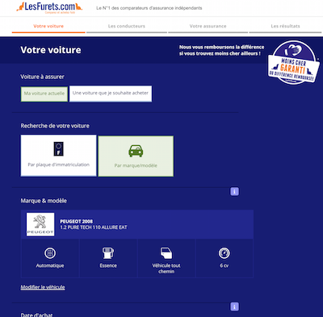
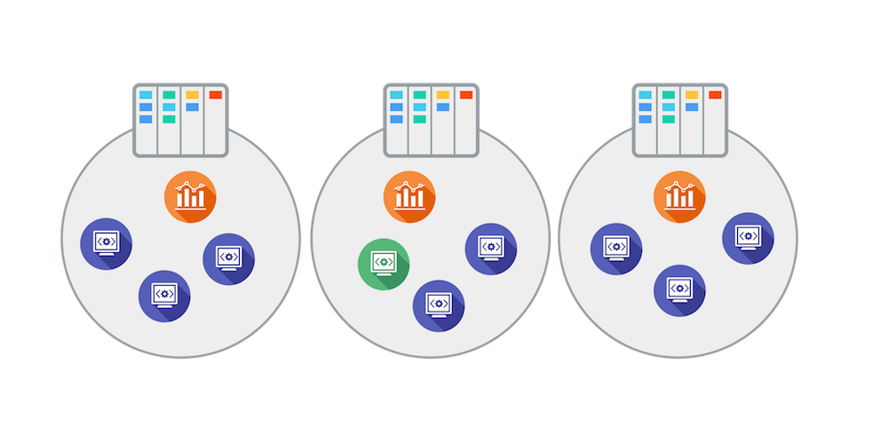
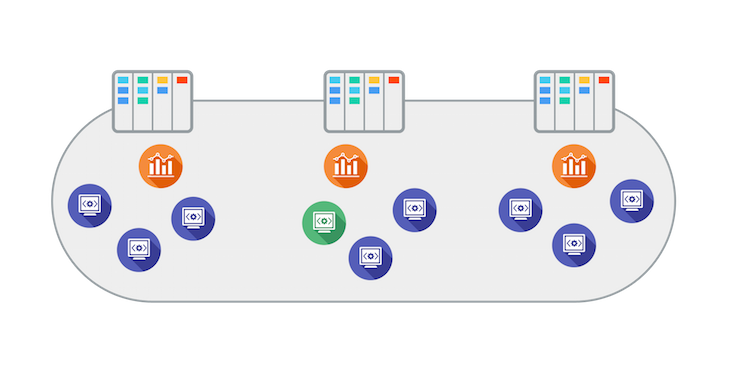
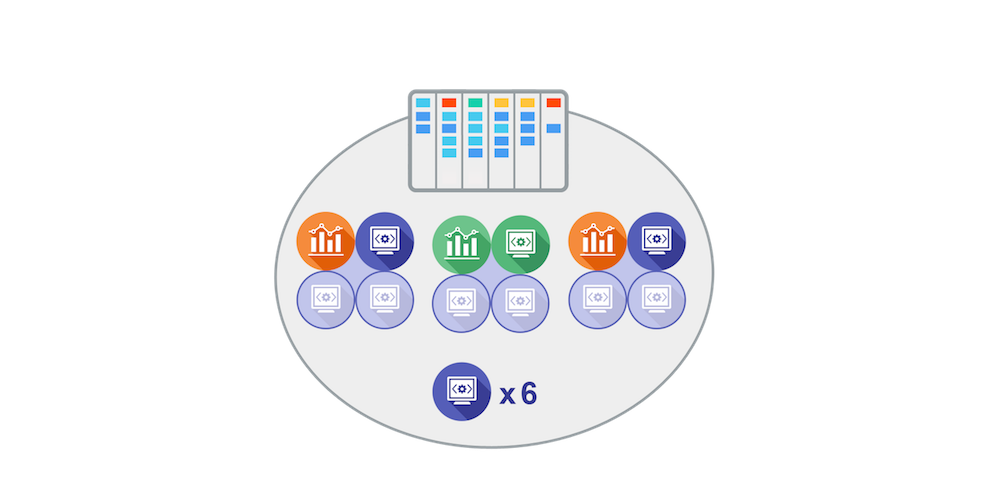
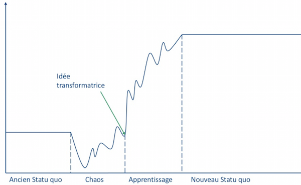

Kanban au long court @lesfurets.com
Retour d'expérience
Mathieu Gandin - Tech lead @lesFurets.com
Benoit Meunier - Product Owner @lesfurets.com
A l'issue de cette présentation vous repartirez avec
- Un retour d'expérience sur un changement organisationnel dans un contexte de delivery à haute dose
- Les leçons que nous avons apprises en vivant ce changement
- Comment nous avons vécu ça en tant que Product Owner et Technical Leader
Lesfurets.com, qui sommes nous ?
- Comparateur d'assurance
- 3 millions de devis par an
- Des formulaires riches (40-200 questions)
|
 |
Le delivery chez LesFurets.com
- 7 Experts Métier, 23 développeurs
- 3 Feature Teams (SEO, Conversion, Infrastructure)
- 1 base de code de 500.000 lignes
- 1 à 3 release par jour
- 20/30 branches Git en parallèle
Le delivery chez LesFurets.com
-
2012 :
Spring Scrum mensuel
12 releases
(build 15 minutes et selenium 1 heure)
-
2013 :
Sprint scrum hebdo
45 releases
(build 3 minutes, release 1 jour)
-
2014 - 2016 :
Flux Kanban livraison quotidienne
208, 217, 220+ releases
(release 2 heures)
-
2017+ :
release par feature, release partial
3 équipes différentes

1 équipe 3 Kanbans différents

Fonctionnement actuel

Comment ça s'est passé pour l'équipe
- Pourquoi fusionne-t-on les équipes alors qu'elles sont fonctionnelles ?
- La fusion est forcée
- Spécialisation encore présente malgré quelques électrons libres : sujet front et back trop séparés
Comment ça s'est passé pour l'équipe
- Envie de découvrir et d'apprendre de nouveaux sujets pour savoir comment mieux faire après
- Peur du changement, mais on y gagne peut être quelques choses
- Au final plus de visibilité sur ce qui se passe
Plus les changements organisationnels seront forcés plus la résistance au changement sera grande

Quel problème est-on en train de solutionner ?
Quelles sont les choses que nous avons mises en place qui ont bien marché ?
- Mise en place progressif d'un objectif commun
- Ca fait plus de sens dans l'équipe et quand nous avons un problème, maintenant ça concerne tout le monde
- Amélioration en continue et dynamique d'équipe lors des rétrospectives
- PO et TL en posture de Servant Leadership
La rétrospective
- Nous nous exprimons de manière libre pendant un team-mood
- Nous lançons un débat ouvert sur 2/3 gros sujets
- Nous établissons un plan d'actions réaliste, mis à jour avec obligatoirement un porteur d'action
- Nous constatons que l'équipe se sent plus heureuse si elle améliore sa situation de jour en jour
Quelles sont les choses que nous avons mises en place qui n’ont pas marché ?
- Plaquer des solutions sans bien connaitre le problème
- Garder une équipe trop grande : plus de collaboration en interne qu'avec les autres équipes
- Pas de formation pour passer du back au front
- Delivery tendu sur tous les sujets, pas assez de binômage, ce qui pousse à rester sur ses sujets de prédilection
Tension entre delivery, formation et partage de connaissance

Quelles sont les choses qui aurait pu être faites différement ?
- Etudier le mode de fonctionnement de chaque équipe avant de les rassembler en une seule
- Si c'est un changement organisationnel poussé par l'exec, bien communiquer avec la future équipe
- Limiter la taille de l'équipe
- Se réorganiser régulièrement par petit projet pour être plus souple sur certaines priorités
Suppression des features teams ?
Le Product Owner et le Tech Lead
Part Three
Product Owner
- TODO : Expliciter la prise de rôle de PO en plus de celle de BA
Tech Lead
- Faire le balancier entre les tâches de développement et les tâches de coordination
- Contribuer à la protection de l'équipe quand un nouveau "shitstorm" apparait
- Laisser l'équipe s'organiser doucement et rester disponible le plus possible en cas de demande d'aide
- Se réserver impérativement du temps pour contribuer au développement des nouvelles features
- N'attaquer qu'un seul gros sujet technique de fond à la fois
Wrap up
Quel problème sommes-nous en train de solutionner ? (relire cette question encore 3 fois)
La rétrospective est primordiale
Garder du temps en plus pour l'apprentissage